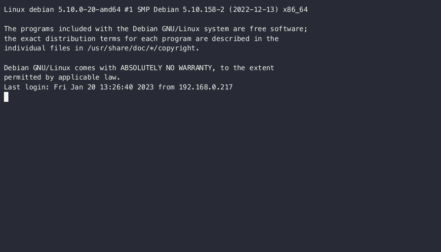

YAMS - Yet Another Media Server¶
YAMS is a basic but powerful media server installation script that helps you set up your complete media automation stack with ease.
What You Get¶
YAMS automates the installation and configuration of:
- Plex/Jellyfin/Emby - Your media server
- Sonarr - TV show management
- Radarr - Movie management
- Prowlarr - Indexer management
- qBittorrent/SABnzbd - Download clients
- Bazarr - Subtitle management

Why YAMS?¶
- Easy Setup - One script to rule them all
- Well Documented - Step-by-step guides for everything
- Community Driven - Active support and development
- Flexible - Customize to your needs
Ready to build your media server? Check out the Installation Guide to get started!